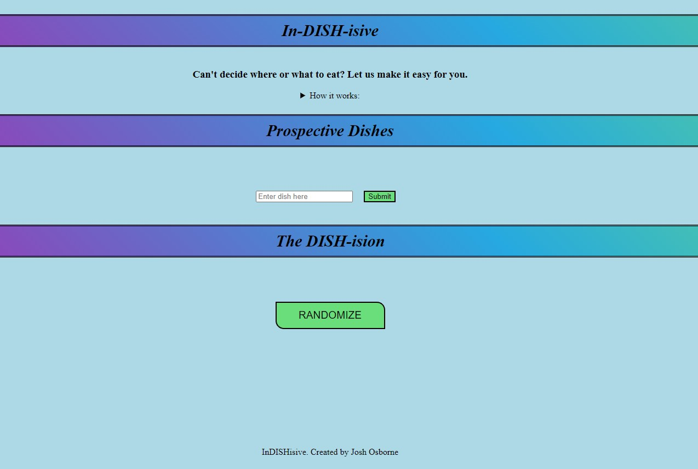

Languages
My favorite languages for systems programming and engineering:
I consider myself a life-long student that is driven by a passion for learning. Formally a pre-medical student, I attended Southern Utah University for my undergraduate education. Following graduation, I transitioned into the quality industry for medical devices but that drive for learning and growth persisted. Returning to my alma mater, I enrolled in an MBA program to increase and diversify my knowledge base. Fast-foward to the year 2022, I was introduced to my most exciting venture yet: software development. After attending a coding Bootcamp at Devmountain, I've been educated on full-stack engineering and found myself being the most passionate I've been to learn. This passion for learning, positive attitude and a life-long student menality has led me to software development. I believe those traits will also help me be successful on this career path and I cannot wait to get started.

My favorite languages for systems programming and engineering:

My prefered technologies for web-development and design:

My prefered technologies for back-end engineering and database structuring:

My favorite tools for version control, code environments, container creation and application testing:
A summary of all my current projects can be found here.
Tabitha's Way is a non-profit food pantry that uses textile recycling to provide
funding for their services. Developed primarily using Elixir, this app was created to help donors find bins closest to them
for recycling and allow for their feedback.
Developed with JavaScript, HTML and CSS, InDISHisive was created to answer an age-old question, "Where should we eat?". This app will compile user inputs and deliver a random food option so that the decision is taken out of the user's hands.
